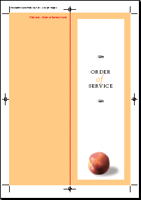
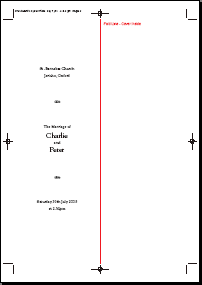
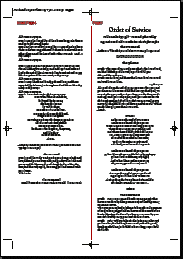
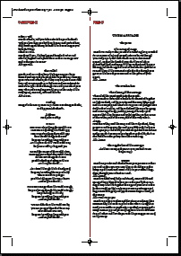

|
peachjuice dot net is a space for the exclusive
use of those that know how to enter it.
| |||||
|
You're in...
...Order of Service Meeting Fr Michael :: 15th June 2005 :: 20:00
THIS is the FULL Word Doc version.
THIS is the PDF version.     Final - 14/07/05 - here. Really nearly final honest - here updated 10/07/05 Almost Final - here updated 01/07/05 ---- The whole thing is here updated 16/06/05 The whole thing is here updated portrait DOC ---- The whole thing is here as a DOC The whole thing is here updated 15/06/05 The whole thing is here updated portrait DOC Order of Service ::
10:00 Entry to church for Organist, Choir, Florist ++ ??
Ref 013:45 Fr John arrives at church 14:00 Service ready to go - Peter arrives with entourage ..... Photographer at door taking couples on way in 14:30 And we're off - Charlie arriving Processional :: I Was Glad, Sir Charles Hubert Hasting Parry (1848-1918) - choir Introduction :: The grace of our lord ... - Fr Michael Hymn :: Make me a Channel of your Peace - All Preface :: In the presence of God ... - Fr Michael The Declarations :: First, I am required to ask ... - Fr Michael The Collect :: God our Father, from the ... - Fr John Reading :: title & author to be chosen - Joan Arbuthnott Address / Second Reading :: ?? Hymn :: One More Step Along the World I Go - All The Marriage :: Who gives this woman ... Fr John The Giving of Rings :: Heavenly Father, source of everlasting ... Fr John The Proclamation :: Let us Pray. O Eternal God ... Fr John Registration :: Cantique de Jean Racine, Gabriel Fauré (1845-1924) - choir Prayers :: Faithful God, holy and eternal, ... - Fr Michael Anthem:: Blessed be the God and Father, Samuel Sebastian Wesley (1810-1876) - choir Dismissal :: God the Holy Trinity make ... Fr Michael Recessional:: March from the Scipio, George Frideric Handel (1685-1759) - choir 15:15 It's all done and we're out Ref 1 Ref 2 Vows love, Peter and Charlie. | |||||